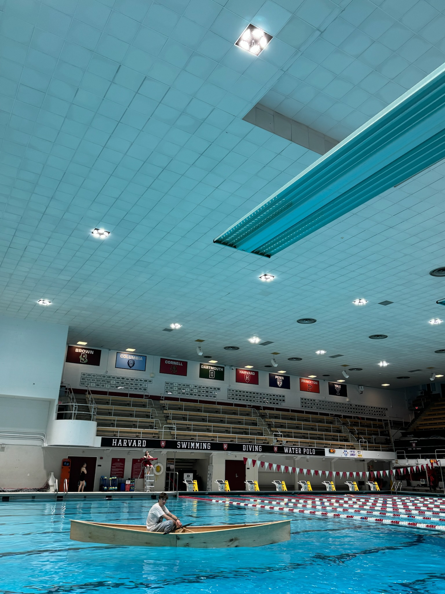
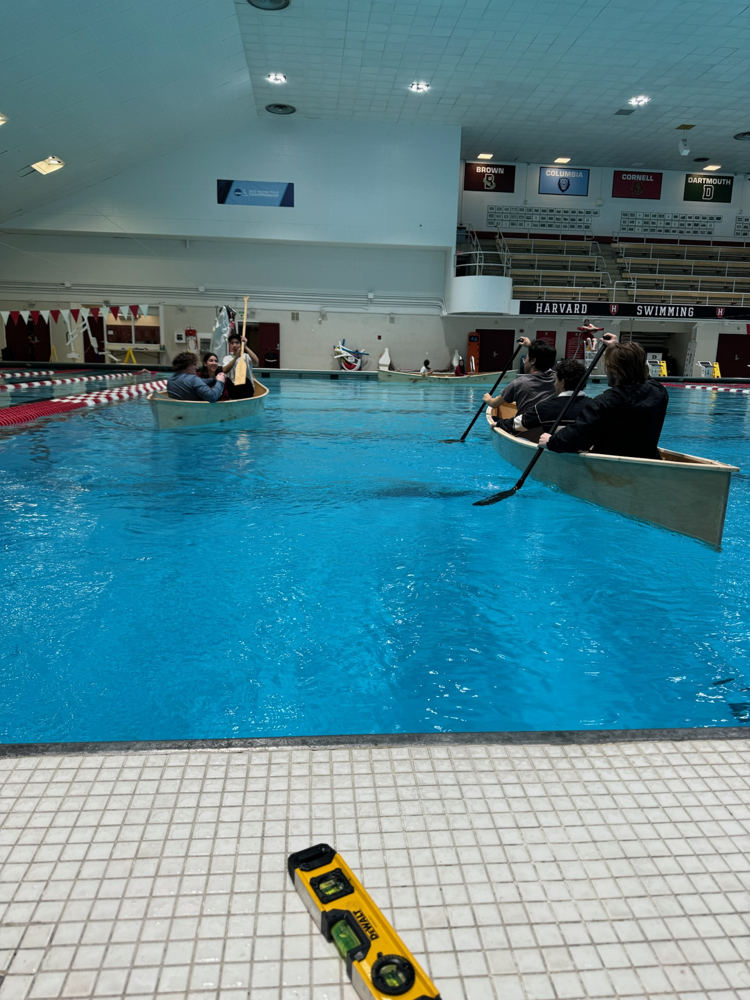
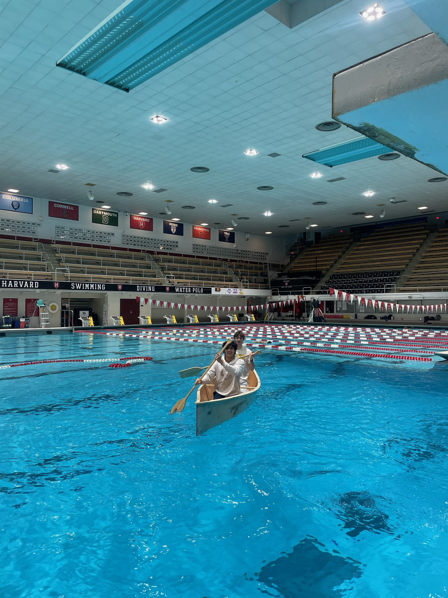
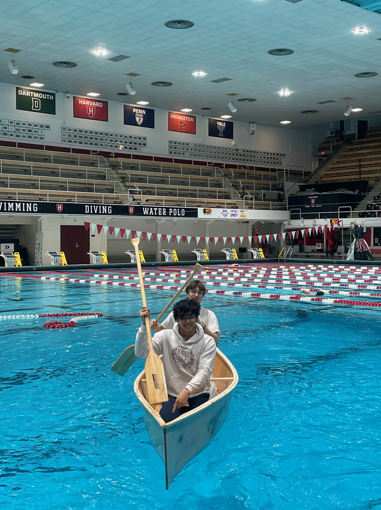

### Week 10: Finishes
Discuss finishes, durability, and longevity. Fill holes, carefully sand boat exterior, and coat with epoxy (and optionally paint).
#### Team speed docs
POOL DAY! SUCCESSS (and leaks)!!! We went to the Blodgett pool to test our boats and found that ours had an unplugged screw hole and some leakage coming from the center where the hull was joined. We also held races (results unconclusive).
Assignment: Document your work on your team’s website.
<video controls width="70%">
<source src="IMG_1594.mov" type="video/mp4">
</video>
<video controls width="70%">
<source src="IMG_1596.mov" type="video/mp4">
</video>



